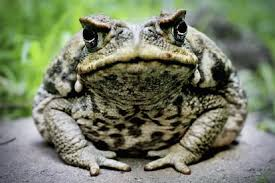

 Los sapos desempeñan un papel crucial en los ecosistemas del cantón Morona Santiago, ya que controlan poblaciones de insectos y sirven de alimento a diversos depredadores. Su piel puede secretar sustancias tóxicas para defenderse de amenazas naturales.
Estos anfibios están altamente sensibles a cambios ambientales, especialmente a la contaminación y destrucción de su hábitat natural, como ríos, charcos y selvas tropicales húmedas, lo que los ha llevado a estar en peligro de extinción en la región.
DATO CURIOSO: Algunos sapos pueden vivir enterrados en el suelo durante meses para sobrevivir a períodos secos, un fenómeno conocido como estivación.